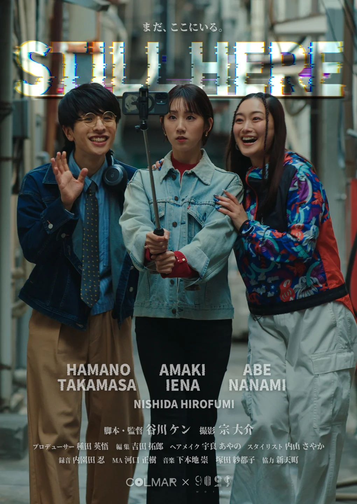
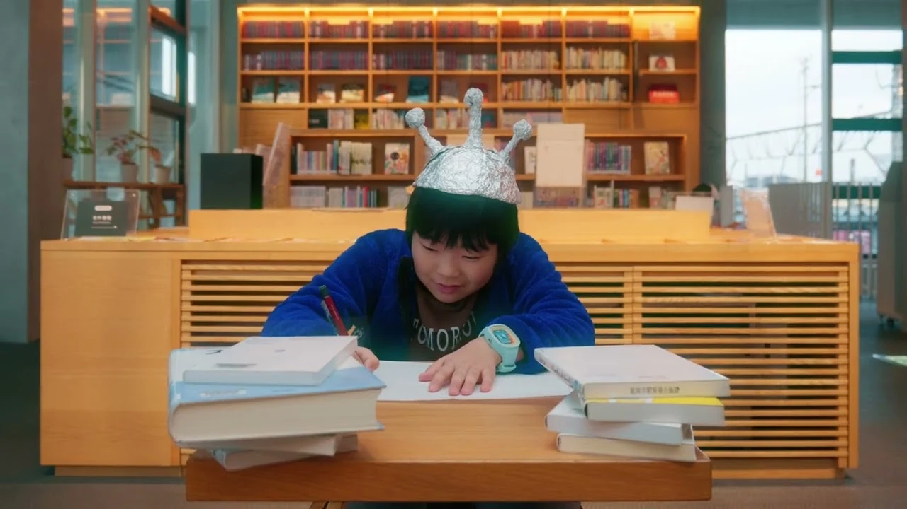
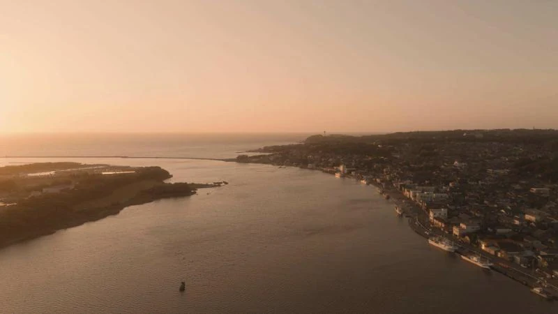
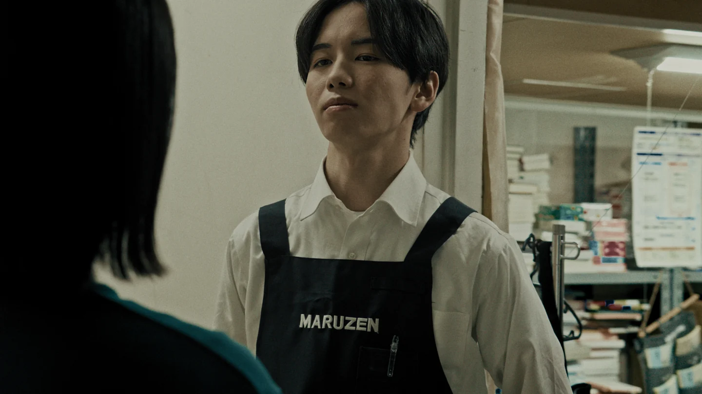
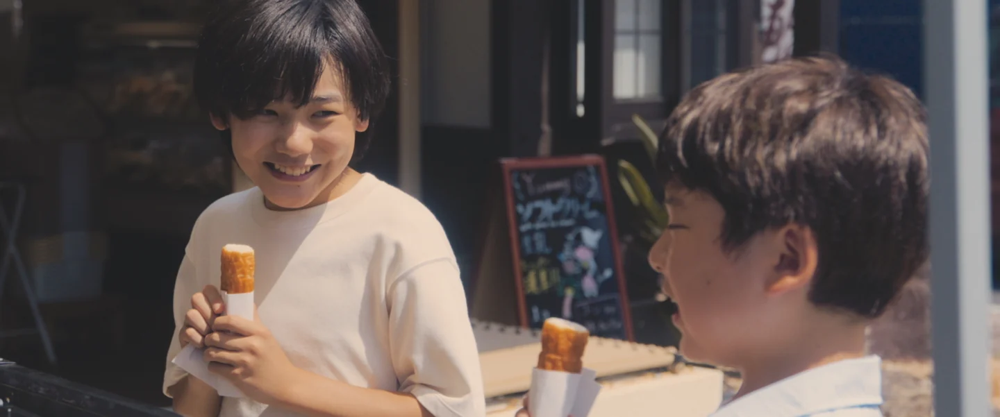
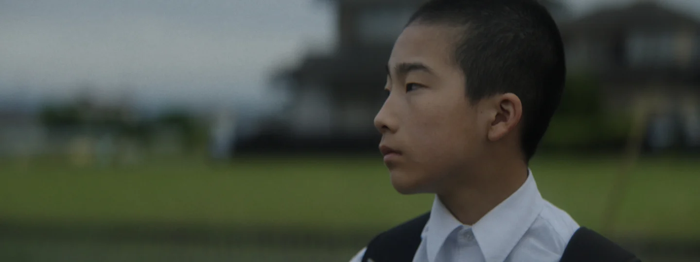
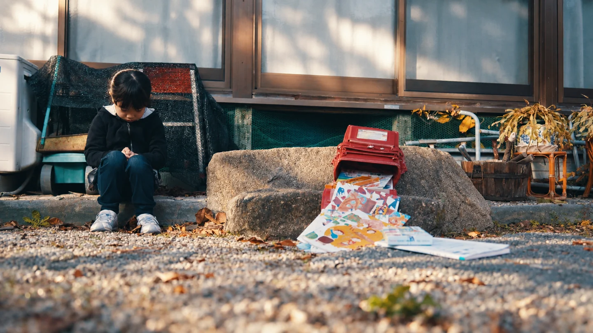

本文へ移動
YOLO FILM FESTIVAL • KUMAMOTO • DENKIKAN
PROGRAM / 2ND EDITION 2026
上映プログラム
まちの数だけ、物語がある。
7本の短編映画を、
熊本のスクリーンで。
2026年12月12日（土）
17:30受付開始・18:00開演 ／ Denkikan 3階
応募作品の中から、上映作品7本が決定しました。上映順に掲載しています。
-

POSTER — STILL HERE
01 福岡県・福岡市天神
STILL HERE
監督：谷川ケン実写 ／ 12分
この街は、上から見ないと存在しない。
都市再開発が進む大都市の中心、歴史ある商店街の“上”に取り残された長屋。そこに住む最後の若者三人は、「まだ、ここにいる」ことを証明するため、SNSで街を発信する。やがて彼らは、思いもよらない選択を迫られる。
守ることは、歩みを止めることなのか？
今年取り壊される福岡・天神「新天町」をモデルに描くシニカル・コメディ。
この作品と、まちのつながり
20代前半、初めて手がけたTVCMが「新天町」でした。30年以上を経て、映像仕事の原点ともいえるこの場所が再開発で姿を消すと知り、その風景と空気を映像に残したいという思いから『STILL HERE』を制作しました。
-

YOUTUBE THUMBNAIL — ウチの宇宙は三角形
02 宮崎県・延岡市
ウチの宇宙は三角形
監督：門田樹実写 ／ 8分
うちのお母さんは「あと2週間で世界が滅亡する」という。でも教科書にはそんなことは書かれていない。長谷川先生も「そんなことはない」という。
この作品と、まちのつながり
宮崎県延岡市で生活しながら映画を撮るプロジェクトから生まれた作品です。出演する二人も延岡で暮らす、俳優ではない本当の親子。まちで出会った人々と風景から生まれた映画です。
-

STILL — エッセル坂を越えて
03 福井県・坂井市三国町
エッセル坂を越えて
監督：西端実歩実写 ／ 25分
福井県三国町で暮らす16歳の少女・内田翠。母の暮らすフランスへの移住を夏休みの終わりに控え、故郷への愛着と新たな生活への不安の間で揺れ動いていた。
翠は町の美しい風景や思い出をカメラに収めながら、三国に残る船箪笥職人の父・達治と、残された時間を過ごしていく。
故郷を離れる娘と、娘を送り出す父。それぞれが別れへの寂しさを抱えながら、自分自身と向き合い、新たな一歩を踏み出していく、夏の終わりの物語
この作品と、まちのつながり
本作の舞台は、私の故郷である福井県坂井市三国町です。美しい港町の風景や伝統工芸の船箪笥を通して、故郷を離れる少女と残る父の想い、そして私自身が暮らしていた頃には気づけなかった、身近にあった故郷の美しさを描きました。
-
STILL — 探す未来
04 東京都・月島
探す未来
監督：なかやま えりか実写 ／ 20分
都市再開発の計画を前に、さまざまな意見を持つ住人たち。主人公・未来(17)は、身の回りで起きた悩みを誰にも打ち明けられずにいた。街の将来を見つめる、ささやかな物語。
この作品と、まちのつながり
日米の垣根を越え交流を続けてきた月島の住民たちの熱い想いから生まれた映画です。タワマン建設による再開発は、一体誰の未来を豊かにするのか。月島から日本全国へ通じるグローカルな問いを、世代と国境を超えた視点で描いています。
-
STILL — 出前少女タンポポ
05 兵庫県・神戸市長田区
出前少女タンポポ
監督：鬼村悠希実写 ／ 25分
父のラーメン店を手伝う少女タンポポ(12才)は、出前先のダンススクールに心惹かれ内緒で通い始める。小さなお店しか知らなかった少女が外の世界に踏み出す成長を描いた下町ミュージカル映画
この作品と、まちのつながり
神戸市長田区の下町を舞台に撮影しました。下町のラーメン店を舞台に、下町で暮らす女の子を主役にした「下町ミュージカル映画」に挑戦しました。地域の商店街、飲食店、子どもたちと協働して制作しました。子どもから大人まで楽しめる映画になっています。楽しんでいただけましたら幸いです。
-
STILL — 専属美容師
06 愛媛県
専属美容師
監督：難波弘二・鴨頭圭佑・軽澤杏乃（共同監督）実写 ／ 8分
数年ぶりに愛媛の実家に帰省した香那(30)は、美容師の仕事を辞めるかどうか悩んでいた。無口な父(56)の髪を切りながらその葛藤を伝えるが、父の反応はすこぶる鈍い。その後、台所で母(56)の切った柿を届けるために近所の公園へ向かった香那は、父の意外な姿を目撃する―。
監督の実際の姉・父・母・祖母がメインキャストをつとめる、不器用な父と娘の関係を描いたヒューマンドラマ。
この作品と、まちのつながり
初めて監督を務めるにあたり「実感を伴った映画」にしたいという思いから、地元の愛媛で撮影し、愛媛で暮らす家族が出演しています。私にとってかけがえのない「まち」と「家族」の穏やかな空気感と温かさを表現しようとしました。
-
STILL — 最後の生活
07 東京都・八王子市
最後の生活
監督：渡邉高章実写 ／ 22分
父を亡くしてから学校へ行かなくなった小学生の春陽は、母の秋と二人暮らし。秋は自身の仕事を続けるために、小説家の兄を呼び春陽の面倒を見てもらうことにする。春陽と「おじさん」の心の交流を描いたある夏の物語。
この作品と、まちのつながり
東京・八王子市を舞台に、父を亡くし学校へ行けなくなった少年と、小説家の叔父とのひと夏の交流を描いた物語です。八王子の街や風景の中で、家族や人とのつながり、うまくいかない日々も含めて、その「生活」を大切に描きました。
作品画像：応募・提供資料およびYouTubeサムネイル ／ あらすじ・まちとのつながり：応募原稿より
当日の上映はありませんが、審査で評価された4作品を入選作品としてご紹介します。掲載は受付番号順です。
-

STILL — 紫が見える
入選 神奈川県・横浜市
紫が見える
監督：山田純実写 ／ 22分
高校生の絢は、亡き親友・紫織になりすまし、認知症の祖母を訪ねる「嘘」を続けていた。それは紫織の父に頼まれての行為でだったが、不安定な母子家庭で孤独を抱える彼女にとって、偽りの面会は心安らげる場と化していた。祖母の怪我を機に面会は途絶えるものの、形見のネックレスを返しに訪れた絢は、寝たきりとなった祖母の最期の意志に触れる。想いを引き継ぐ決心をした彼女は、バイト先の同僚から放たれたある一言に微笑む。
この作品と、まちのつながり
仕事で通った横浜、本が好きで通った丸善 横浜みなとみらい店、ここをロケ地にできて幸せでした。
-

STILL — ちくわっちゃ！
入選 山口県・下関市
ちくわっちゃ！
監督：三坂 知絵子実写 ／ 25分
責任感が強く、夢を追うことへの葛藤がある兄・カイ。感情のコントロールがうまくできず、こだわりの強い弟・ヒロ。東京で暮らす２人は、家の事情で、下関の叔母の家で夏休みを過ごすことに。豊かな自然の中での経験を通じ、多様な価値観を知る２人。ある日、カイは浜辺で歌う少女キノと出会う。キノの祖父シゲルが作る「ちくわ」を食べ、その美味しさに感動したカイは、ちくわの魅力を伝える配信番組作りに挑戦する。
この作品と、まちのつながり
ロケ地である山口県下関市は、私自身の故郷です。子どもたちのイキイキとした多面的な魅力を伝えたいと思い、この映画を製作しました。
下関の美しい風景とともに、子どもたちのひと夏の挑戦の物語を楽しんでいただけたら嬉しいです！
-

STILL — 味。
入選 静岡県・裾野市
味。
監督：岩本崇穂実写 ／ 8分
孤独を抱える中学生タケルは、学校で開かれている「朝の食事会」と味噌汁やおにぎりの温もりに触れ、少しずつ心を開いていく。
食卓がつなぐ、小さな友情の物語。
この作品と、まちのつながり
静岡県裾野市の劇団での子どもたちと作り上げた映画です。
裾野市の綺麗な景色、学校、そこで実際に暮らしている子どもちが出演しています。
-

STILL — 消えない光
入選 佐賀県・佐賀市富士町
消えない光
監督：江口 寛武実写 ／ 25分
「妹が怖い」事件を起こした妹・莉子が、保護観察のもと姉・明香里の家に戻ってくる。家族なのに、目の前にいる妹が怖い。過去に起きた出来事と、離れていた時間が、二人の間に距離を作っていた。妹が戻った事で、周囲からの視線が変わっていく中、二人は同じ家で食卓を囲み、同じ時間を過ごしていく。そして、台風の夜を迎えた二人の間に、小さな変化が訪れる。佐賀市富士町の集落を舞台に、姉妹の距離の変化を静かに描いた作品。
この作品と、まちのつながり
姉妹が向き合う古い家や、集落を包む静かな空気も、この物語にとって欠かせない存在です。観光地としての佐賀ではなく、自分の町にある集落で、家族の物語が生まれているという視点から、この場所を舞台にしました。